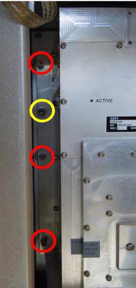

With a Screwdriver PH2 x
300 loosen seven of the eight screws, which are holding
the SSPA Module to the
cabinet. One screw on the left side (see yellow circle in Figure 3) should remain
untouched.
Figure 3.
Screws

The SSPA hangs now only at the one screw, which is still
tightend.